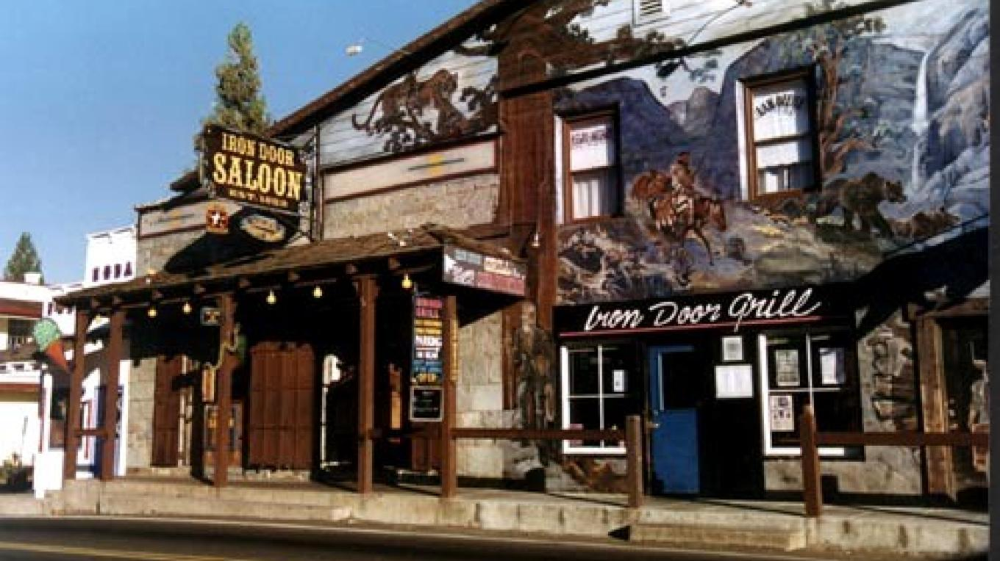

História do Iron Door Saloon
O Iron Door Saloon é um dos saloons mais antigos e famosos do Velho Oeste. Fundado em 1852, na cidade de Groveland, Califórnia, rapidamente se tornou um ponto de encontro para cowboys, mineiros e viajantes em busca de diversão e entretenimento.
Críticas:
- "O ambiente acolhedor e autêntico do Iron Door Saloon é uma viagem no tempo imperdível para os amantes da história do Velho Oeste." - The Western Times
- "As bebidas servidas no Iron Door Saloon são simplesmente divinas, fazendo jus à tradição dos bares de outrora." - Drinks & Tipples Magazine
Fatos históricos:
- O saloon era conhecido por sua atmosfera vibrante, com música ao vivo, jogos de cartas e dançarinas.
- Funcionários famosos, como Wyatt Earp e Doc Holliday, frequentaram o Iron Door Saloon durante seus dias de glória.
Anexo:
Fotografia histórica do Iron Door Saloon (1855)

informações adicionais:
- A Iron Door Saloon é um histórico bar localizado em Groveland, Califórnia, nos Estados Unidos. Fundado em 1852, é considerado um dos bares mais antigos e icônicos do estado da Califórnia e é conhecido por sua rica história e atmosfera autêntica do Velho Oeste.
- A história da Iron Door Saloon remonta à corrida do ouro da Califórnia, quando Groveland era uma cidade movimentada de garimpeiros em busca de fortuna. O salão foi originalmente construído como uma estalagem para viajantes e mineiros, oferecendo comida, bebida e acomodações básicas.
Eventos:
- Ao longo dos anos, a Iron Door Saloon testemunhou muitos eventos históricos. Durante a corrida do ouro, era um local popular para os garimpeiros locais se reunirem após um longo dia de trabalho árduo nas minas. Também serviu como ponto de encontro para vaqueiros, madeireiros e outros trabalhadores da região.
- Durante a era da Lei Seca nos Estados Unidos (1920-1933), quando a venda de álcool estava proibida, a Iron Door Saloon foi transformada em uma loja de ferragens para evitar o fechamento. A lenda diz que a antiga porta de entrada de ferro (daí o nome "Iron Door") era usada para esconder o estoque de bebidas alcoólicas contrabandeadas.
Como era?
- A atmosfera dentro da Iron Door Saloon permanece praticamente inalterada ao longo dos anos. O salão possui uma decoração rústica e muitos itens históricos, como fotografias antigas, ferramentas de mineração e memorabilia do Velho Oeste. A tradição de servir cervejas geladas, uísques e coquetéis continua até hoje.
- A Iron Door Saloon é um local popular para moradores locais e turistas, oferecendo uma experiência autêntica de bar do Velho Oeste. Além disso, o salão também abriga eventos especiais, como apresentações musicais ao vivo e festivais temáticos, que atraem visitantes de toda a região.
- Em resumo, a Iron Door Saloon é um icônico bar histórico localizado em Groveland, Califórnia. Com mais de 150 anos de história, o salão é um lembrete vivo dos dias da corrida do ouro e do espírito do Velho Oeste americano.